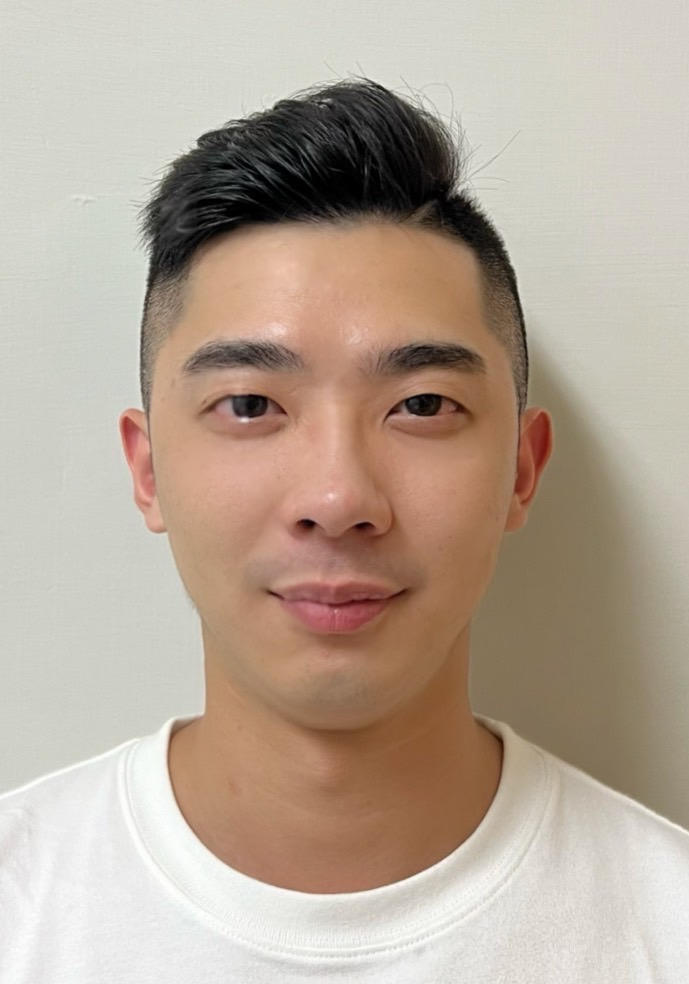

RESUME · BACKEND / SYSTEM DESIGN
Java 後端／系統設計（SD）｜主導銀行遺留系統重構與 AI 導入 SDLC｜AWS AIF & CLF 雙認證

3 年 Java 後端開發與系統設計經驗，現任職國泰世華銀行擔任 SD（系統設計）角色（另有 5 年航空業跨域歷練）。主導系統架構設計與遺留系統重構，2026 年起主導 AI 工具導入銀行 SDLC。持有 AWS AI Practitioner（AIF-C01）與 Cloud Practitioner（CLF-C02）雙認證。